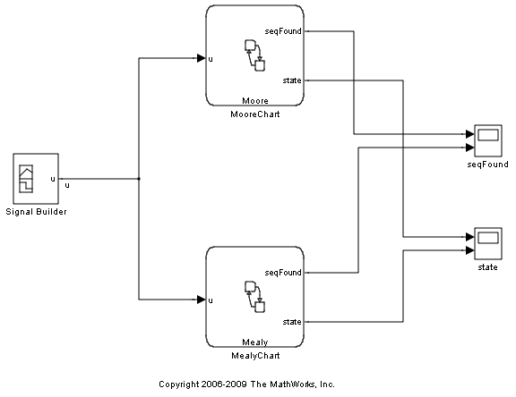
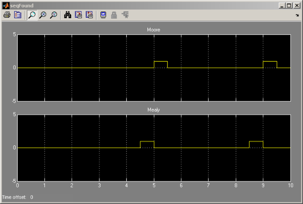
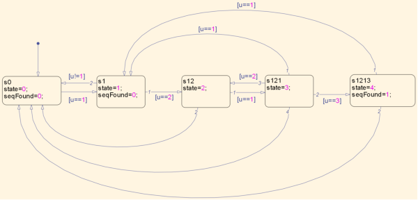

Mealy と Moore チャートを使用したシーケンス認識
このデモでは、信号処理アプリケーション (ここでは、シーケンス認識) で Mealy マシンと Moore マシンを使用する方法を示します。Moore マシンでは、アクションはステート アクションのみですが、Mealy マシンでは、アクションは条件アクションのみです。
2 つの Stateflow® チャートを使用して、Signal Builder からの入力信号でシーケンス 1、2、1、3 を見つけます。このシーケンス認識のステータスは、出力変数 "state" にログされます。シーケンスが見つかると、変数 seqFound が 1 に設定されます。シミュレーションの実行時およびスコープを表示時には、Moore 出力が 1 タイム ステップごとに遅れることに注意してください。この遅れの原因は、Moore マシンからの出力が、直前のタイム ステップからのステートに基づいていることと、Mealy マシンからの出力が、直前のタイム ステップからのステートと現在の入力に基づいていることです。
参照: 『Digital Design: From Gates to Intelligent Machines』2006 年、Bruce F. Katz 著
  